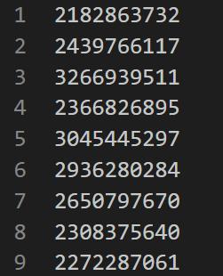

Map
班级学生成绩的随机生成
- 输入：本班同学的学号
- 输出：<学号，成绩>
数据准备
首先需要一个
stuID.csv文件，每一列为一个学号：- 
然后将文件放入
HDFS中：hdfs dfs put stuID.csv input
编写程序
import org.apache.flink.api.common.functions.MapFunction;
import org.apache.flink.api.java.DataSet;
import org.apache.flink.api.java.ExecutionEnvironment;
import org.apache.flink.api.java.tuple.Tuple2;
import org.apache.flink.api.java.utils.ParameterTool;
import java.util.Random;
public class StuScore {
private static Random rand = new Random();
public StuScore(){}
public static void main(String[] args) throws Exception {
ParameterTool params = ParameterTool.fromArgs(args);
ExecutionEnvironment env = ExecutionEnvironment.getExecutionEnvironment();
env.getConfig().setGlobalJobParameters(params);
DataSet<String> text;
if(params.has("input")){
text = env.readTextFile(params.get("input"));
}else{
System.out.println("Please confirm input keywords!");
return;
}
DataSet<Tuple2<String,Integer>> stuscore = text.map(new MapFunction<String, Tuple2<String, Integer>>() {
@Override
public Tuple2<String, Integer> map(String s) throws Exception {
return new Tuple2<>(s,rand.nextInt(100) +1);
}
});
//如果没有指定输出，则默认打印到控制台
if(params.has("output")){
stuscore.writeAsCsv(params.get("output"),"\n", ",");
env.execute();
}else{
System.out.println("Printing result to stdout. Use --output to specify output path.");
stuscore.print();
}
}
}
注意点
- Flink提供了一个
ParameterTool用于简化命令行参数的工具 - 使用匿名函数新建算子是一种很常见的操作
运行
首先确保已经打开了Flink，并在JAR包下执行
flink run -c StuScore StuScore.jar --input /home/hadoop/Documents/distribution/Flink/StuScore/stuID.csv
这里可以用--output指定输出路径，默认为标准输出
查看结果
reduceByKey
问题
求平均成绩：将全班同学每隔5号分为一组，求每组的平均成绩
输入： <学号，成绩>
输出：<组号，平均分>
数据准备
首先需要一个
score.csv文件，每一列为学号和学生成绩：

编写程序
import org.apache.commons.compress.archivers.dump.DumpArchiveEntry;
import org.apache.flink.api.common.typeinfo.Types;
import org.apache.flink.api.java.DataSet;
import org.apache.flink.api.java.ExecutionEnvironment;
import org.apache.flink.api.java.tuple.Tuple2;
import org.apache.flink.api.java.utils.ParameterTool;
public class AVGscore {
private static Integer groupSize = 5;
public static void main(String[] args) throws Exception {
ParameterTool params = ParameterTool.fromArgs(args);
ExecutionEnvironment env = ExecutionEnvironment.getExecutionEnvironment();
env.getConfig().setGlobalJobParameters(params);
DataSet<Tuple2<Integer, Double>> fileDataSet;
if (params.has("input")) {
fileDataSet = env.readCsvFile(params.get("input"))
.types(Integer.class, Double.class);
} else {
System.out.println("Please confirm input keywords!");
return;
}
/**
* map string to (id, score) and convert to (group_id, (score,1))
* GroupBy and reduce == reduceByKey
* and then map to avg score
*/
DataSet<Tuple2<Integer, Double>> stuAVGscore = fileDataSet
.map(line -> Tuple2.of(
(line.f0-1)/ 5, Tuple2.of(line.f1, 1)))
.returns(Types.TUPLE(Types.INT, Types.TUPLE(Types.DOUBLE, Types.INT)))
.groupBy(0)
.reduce(
(kv1, kv2) -> Tuple2.of(kv1.f0, Tuple2.of(kv1.f1.f0 + kv2.f1.f0, kv1.f1.f1 + kv2.f1.f1)))
.returns(Types.TUPLE(Types.INT, Types.TUPLE(Types.DOUBLE, Types.INT)))
.map(
line -> Tuple2.of(line.f0, line.f1.f0 / line.f1.f1)
).returns(Types.TUPLE(Types.INT, Types.DOUBLE));
//如果没有指定输出，则默认打印到控制台
if (params.has("output")) {
stuAVGscore.writeAsCsv(params.get("output"), "\n", ",");
env.execute();
} else {
System.out.println("Printing result to stdout. Use --output to specify output path.");
stuAVGscore.print();
}
}
}
注意点
- Flink与Spark不同，没有reduceByKey等算子，都是使用group field进行计算，还没找到更好的方法，具体参考这里
- 在Flink中，使用Lambda表达式不一定是更好的选择，因为对于每个Lambda表达式，Flink都要求显示的指定返回值（returns）
运行
运行程序
flink run -c AVGscore AVGscore.jar --input /home/hadoop/Documents/distribution/Flink/AVGscore/score.csv
查看结果：
Natural join
数据准备
有两个文件
person.txt
1 Aaron 210000
2 Abbott 214000 3 Abel 221000 4 Abner 215000 5 Abraham 226000 6 Adair 225300 7 Adam 223800 8 Addison 224000 9 Adolph 223001
address.txt
210000 Nanjing 214000 Wuxi 221000 Xuzhou 213000 Changzhou
要求以code为连接属性，匹配出person中每个人所在的位置信息；每条记录各个字段之间以空格为分隔符。
编写程序
import org.apache.flink.api.common.functions.FlatJoinFunction;
import org.apache.flink.api.common.typeinfo.Types;
import org.apache.flink.api.java.DataSet;
import org.apache.flink.api.java.ExecutionEnvironment;
import org.apache.flink.api.java.tuple.Tuple2;
import org.apache.flink.api.java.tuple.Tuple3;
import org.apache.flink.api.java.tuple.Tuple4;
import org.apache.flink.api.java.utils.ParameterTool;
import org.apache.flink.util.Collector;
import scala.Int;
import java.lang.reflect.Type;
public class NaturalJoin {
public static void main(String args[]) throws Exception{
ParameterTool params = ParameterTool.fromArgs(args);
ExecutionEnvironment env = ExecutionEnvironment.getExecutionEnvironment();
env.getConfig().setGlobalJobParameters(params);
// code, city
DataSet<Tuple2<Integer, String>> addDataSet;
// id ,name, code
DataSet<Tuple3<Integer, String, Integer>> personDataSet;
if (params.has("addinput")) {
addDataSet = env.readCsvFile(params.get("addinput"))
.fieldDelimiter(" ")
.ignoreInvalidLines()
.types(Integer.class, String.class);
} else {
System.out.println("Please confirm input keywords!");
return;
}
if (params.has("personinput")) {
personDataSet = env.readCsvFile(params.get("personinput"))
.fieldDelimiter(" ")
.ignoreInvalidLines()
.types(Integer.class, String.class, Integer.class);
} else {
System.out.println("Please confirm input keywords!");
return;
}
DataSet<Tuple4<Integer, String, Integer, String>> result = personDataSet.join(addDataSet)
.where(2)
.equalTo(0)
.with(
(x, y) -> Tuple4.of(x.f0, x.f1, x.f2, y.f1)
).returns(Types.TUPLE(Types.INT,Types.STRING,Types.INT,Types.STRING));
personDataSet.print();
//如果没有指定输出，则默认打印到控制台
if (params.has("output")) {
result.writeAsCsv(params.get("output"), "\n", ",");
env.execute();
} else {
System.out.println("Printing result to stdout. Use --output to specify output path.");
result.print();
}
}
}
注意点
- 这里需要格外注意的是，本文件存在缺失值，这样会导致readCsvFile失效，因此需要忽略有缺失值的列
- flink关于DataSet join 的介绍
运行
本地运行
运行程序并查看结果
flink run -c NaturalJoin NaturalJoin.jar --addinput /home/hadoop/Documents/distribution/Flink/NaturalJoin/address.txt --personinput /home/hadoop/Documents/distribution/Flink/NaturalJoin/person.txt

Kmeans
数据准备
输入数据（k-means.dat）：
4,400 96,826 606,776 474,866 400,768 2,920 356,766 36,687 -26,824
- 第一行标明K的值和数据个数N, 均为整形, 由","隔开 (如 3,10 表示K=3, N=10)。
- 之后N行中每行代表一个二维向量, 向量元素均为整形, 由","隔开 (如 1,2 表示向量(1, 2))。
输出: K行, 每行是一个聚类图心的二维向量, 向量元素均为浮点型 (如 1.1,2.3)。
编写程序
point.java
用于自定义point类（POJO对象）
import java.io.Serializable;
public class Point implements Serializable {
public double x,y;
public Point() {
}
public Point(double x, double y) {
this.x = x;
this.y = y;
}
public Point add(Point other) {
x += other.x;
y += other.y;
return this;
}
public Point div(long val) {
x /= val;
y /= val;
return this;
}
public double euclideanDistance(Point other) {
return Math.sqrt((x - other.x) * (x - other.x) + (y - other.y) * (y - other.y));
}
public String toString() {
return x + " " + y;
}
}
kmeansRun.java
import org.apache.flink.api.common.functions.*;
import org.apache.flink.api.java.DataSet;
import org.apache.flink.api.java.ExecutionEnvironment;
import org.apache.flink.api.java.functions.FunctionAnnotation;
import org.apache.flink.api.java.operators.IterativeDataSet;
import org.apache.flink.api.java.tuple.Tuple2;
import org.apache.flink.api.java.tuple.Tuple3;
import org.apache.flink.api.java.utils.ParameterTool;
import org.apache.flink.configuration.Configuration;
import java.io.BufferedReader;
import java.io.FileReader;
import java.util.ArrayList;
import java.util.Collection;
public class Kmeans {
public static void main(String[] args) throws Exception {
// Checking input parameters
final ParameterTool params = ParameterTool.fromArgs(args);
// set up execution environment
ExecutionEnvironment env = ExecutionEnvironment.getExecutionEnvironment();
env.getConfig().setGlobalJobParameters(params); // make parameters available in the web interface
// get input data:
DataSet<Point> points = getPoint(params, env);
if (points == null)
return;
DataSet<Centroid> centroids = getCentroid(params, env);
// set number of bulk iterations for KMeans algorithm
IterativeDataSet<Centroid> loop = centroids.iterate(params.getInt("iterations", 100));
DataSet<Centroid> newCentroids = points
// compute closest centroid for each point
.map(new SelectNearestCenter()).withBroadcastSet(loop, "centroids")
// count and sum point coordinates for each centroid
.map(new CountAppender())
.groupBy(0).reduce(new CentroidAccumulator())
// compute new centroids from point counts and coordinate sums
.map(new CentroidAverager());
// feed new centroids back into next iteration
DataSet<Centroid> finalCentroids = loop.closeWith(newCentroids, newCentroids.filter(new thresholdFilter()).withBroadcastSet(loop,"centroids"));
// DataSet<Tuple2<Integer, Point>> clusteredPoints = points
// // assign points to final clusters
// .map(new SelectNearestCenter()).withBroadcastSet(finalCentroids, "centroids");
// emit result
if (params.has("output")) {
finalCentroids.writeAsCsv(params.get("output"), "\n", " ");
env.execute();
} else {
System.out.println("Printing result to stdout. Use --output to specify output path.");
finalCentroids.print();
}
}
private static DataSet<Point> getPoint(ParameterTool params, ExecutionEnvironment env) {
DataSet<Point> points;
if (params.has("input")) {
// read points from CSV file
points = env.readCsvFile(params.get("input"))
.ignoreFirstLine()
.pojoType(Point.class, "x", "y");
} else {
System.out.println("Use --input to specify file input.");
return null;
}
return points;
}
private static DataSet<Centroid> getCentroid(ParameterTool params, ExecutionEnvironment env) throws Exception {
ArrayList<Centroid> centroidArrayList = new ArrayList<>();
BufferedReader br = new BufferedReader(new FileReader(params.get("input")));
String text = br.readLine();
int k = Integer.parseInt(text.split(",")[0]);
while (k != 0) {
text = br.readLine();
double x = Double.parseDouble(text.split(",")[0]);
double y = Double.parseDouble(text.split(",")[1]);
centroidArrayList.add(new Centroid(k, x, y));
k--;
}
DataSet<Centroid> centroids = env.fromCollection(centroidArrayList);
return centroids;
}
/**
* Determines the closest cluster center for a data point.
*/
@FunctionAnnotation.ForwardedFields("*->1")
public static final class SelectNearestCenter extends RichMapFunction<Point, Tuple2<Integer, Point>> {
private Collection<Centroid> centroids;
/**
* Reads the centroid values from a broadcast variable into a collection.
*/
@Override
public void open(Configuration parameters) throws Exception {
this.centroids = getRuntimeContext().getBroadcastVariable("centroids");
}
@Override
public Tuple2<Integer, Point> map(Point p) throws Exception {
double minDistance = Double.MAX_VALUE;
int closestCentroidId = -1;
// check all cluster centers
for (Centroid centroid : centroids) {
// compute distance
double distance = p.euclideanDistance(centroid);
// update nearest cluster if necessary
if (distance < minDistance) {
minDistance = distance;
closestCentroidId = centroid.id;
}
}
// emit a new record with the center id and the data point.
return new Tuple2<>(closestCentroidId, p);
}
}
/**
* Appends a count variable to the tuple.
*/
@FunctionAnnotation.ForwardedFields("f0;f1")
public static final class CountAppender implements MapFunction<Tuple2<Integer, Point>, Tuple3<Integer, Point, Long>> {
@Override
public Tuple3<Integer, Point, Long> map(Tuple2<Integer, Point> t) {
return new Tuple3<>(t.f0, t.f1, 1L);
}
}
/**
* Sums and counts point coordinates.
*/
@FunctionAnnotation.ForwardedFields("0")
public static final class CentroidAccumulator implements ReduceFunction<Tuple3<Integer, Point, Long>> {
@Override
public Tuple3<Integer, Point, Long> reduce(Tuple3<Integer, Point, Long> val1, Tuple3<Integer, Point, Long> val2) {
return new Tuple3<>(val1.f0, val1.f1.add(val2.f1), val1.f2 + val2.f2);
}
}
/**
* Computes new centroid from coordinate sum and count of points.
*/
@FunctionAnnotation.ForwardedFields("0->id")
public static final class CentroidAverager implements MapFunction<Tuple3<Integer, Point, Long>, Centroid> {
@Override
public Centroid map(Tuple3<Integer, Point, Long> value) {
// id, X/num Y/num
return new Centroid(value.f0, value.f1.div(value.f2));
}
}
/**
* Filter that filters vertices where the centorid difference is below a threshold.
*/
public static final class thresholdFilter extends RichFilterFunction<Centroid> {
private Collection<Centroid> centroids;
private double threshold = 1e-5;
/**
* Reads the centroid values from a broadcast variable into a collection.
*/
@Override
public void open(Configuration parameters) throws Exception {
this.centroids = getRuntimeContext().getBroadcastVariable("centroids");
}
@Override
public boolean filter(Centroid centroid) {
for (Centroid oldcentroid : centroids) {
if (centroid.id == oldcentroid.id) {
// compute distance
double distance = centroid.euclideanDistance(oldcentroid);
return (distance > this.threshold);
}
}
return true;
}
}
}
注意事项
- 使用Distributed cache
- 在transform中，使用ForwardedFields注解来帮助flink优化
- 这里使用了迭代（iteration），比较复杂，若需要进行比较退出循环，则需要在
closeWith中加入第二个Dataset，若其DataSet是空的，则退出循环
运行
本地运行
运行程序
flink run -c Kmeans Kmeans.jar --input /home/hadoop/Documents/distribution/Flink/kmeans/k-means.dat
查看结果：